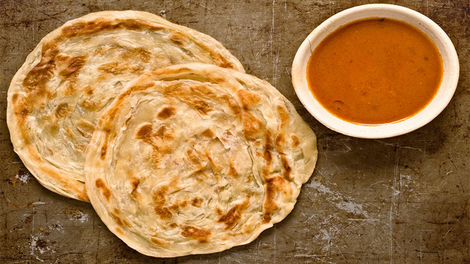

Roti Prata Recipe

Description
Another one of my comfort foods, so savoury and crispy. Follow along for a simple Roti Prata Recipe!
Ingredients
- All-purpose flour
- Hot water
- Salt
- Sugar
- Oil
Steps
- Place all the ingredients in a mixing bowl of a stand mixer
- Knead on low speed for 10-12 minutes until the fough is smooth and won't break when stretched thin and can allow light to pass through.
- Divide the fough into 5 equal portions and roll them into a round ball. Add 2 tablespoon of cooking oil on a plate and rub it onto each dough
- Cover tightly with a cling wrap and rest for at least 2 hours
- Starting from the centre of the fough, use all 10 fingers to slowly stretch the fough out in all directions until you have 5 inch in diameter. Then gently pull the edge of the dough to stretch it out until it is 3 to 4 times its original size.
- Fold the dough in half then another half.
- Preheat a non-stick pan. Add about 1 tablespoon of cooking oil cook until golden brown and crisp over medium heat. Wait for about 1 minute, for plain and egg prata, use your hands to fluff and scrunch the dough.